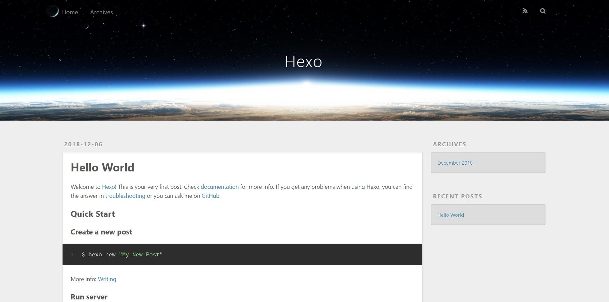
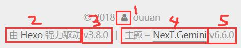

博客准备和搭建
准备
安装Git
安装Node.js
Window用户使用安装程序进行安装.安装时,勾选Add to PATH选项
安装Hexo
打开CMD,执行命令 : npm install -g hexo-cli
Github
点击右上角你的头像，打开“Your repositories”，点击绿色的按钮“New”。
在”Repository name”一栏填入 yourname.github.io （“yourname”指你的 GitHub ID，比如我就填 Smallbird6.github.io），”Description”可以随便填也可以不填，然后点绿色的按钮“Create repository”。
本地设置
输入命令hexo init来初始化hexo
输入命令npm install来安装一些需要的包
输入命令hexo s并在浏览器打开localhost:4000在本地预览博客；如果上文步骤进行正确，应该看到一个类似于这样的页面：

下载NexT主题
git clone https://github.com/theme-next/hexo-theme-next themes/next
打开根目录下的_config.yml将theme: landscape修改为theme: next
将博客上传至GitHub
输入命令ssh-keygen来生成SSH，让你输入东西你就空着，按回车（应该要按三次回车)
然后用任意的文本编辑器打开C:\Users\电脑用户名\.ssh\id_rsa.pub,复制里面的内容
打开GitHub,点击右上角的头像，打开“Settings”，选择左边的“SSH and GPG keys”，点绿色的按钮“New SSH key”，Title随便填,下面的Key把刚才复制的东西粘贴进去，然后点绿色的按钮“Add SSH key”。过程中可能需要输入密码
输入命令ssh -T git@github.com，若出现Hi yourname! You've successfully authenticated, but GitHub does not provide shell access表示 SSH 配置成功
输入命令npm install hexo-deployer-git --save安装 deployer
打开根目录下的_config.yml ，将最后几行改为 :
1 | deploy: |
当然”yourname”要改成你的GitHub ID
依次输入命令：
hexo clean
hexo g
hexo d
等几分钟，再用浏览器打开yourname.github.io，应该就可以看到你的博客了
博客的配置
根目录下的_config.yml
可以在highlight.tab_replace设置将缩进替换为什么，默认是长度为八空格的制表符。例如：
1 | highlight: |
主题目录下的 _config.yml
选择NexT主题的四种之一
1 | # Schemes |
四种主题预览 :
改变网站图标
1 | favicon: |
将你想用的图标放在\themes\next\source\images里，然后修改上面的文件名即可
页脚设置
1 | footer: |
icon： © 2019与用户名之间的图标（图中 1）
图标名称为Font Awesome上的图标名称
powered.enable：为true则会显示“由 Hexo 强力驱动”（图中 2）
powered.version：为true则会显示 Hexo 的版本（图中 3）
theme.enable：为true则会显示“主题 – NexT.XX”（图中 4）
theme.version：为true则会显示主题的版本（图中 5）

注：根据 NexT 主题的 LICENSE，footer 中必须开启 theme.enable 选项
“关于”&”标签”
1 | menu: |
如果需要使用“关于”页面，输入命令hexo new page "about"
然后在\source\about\index.md中就可以编辑“关于”页面了
可以修改\source\about\index.md中的title项来显示“关于”而非“about”
如果需要使用“标签”页面，输入命令hexo new page "tags"
然后向source\tags\index.md中添加一行：type: "tags"
如果需要使用“分类”页面，输入命令hexo new page "categories"
然后向source\categories\index.md中添加一行：type: "categories"
社交网站
1 | social: |
在social下每行一个，格式为：名称: 地址 || 图标
友情链接
1 | # Blog rolls |
links_icon：显示在标题前的图标
links_title：标题
links_layout：block 一行一个，inline 一行多个
links：要显示的链接以及名称
头像
1 | # Sidebar Avatar |
url：头像地址，留空则不显示头像
rounded：圆/方头像
opacity：不透明度
rotated：随光标旋转
回到顶部按钮/阅读百分比
1 | back2top: |
首页不显示全文
可以在\themes\next\_config.yml里设置到一定字数自动不显示全文：
1 | # Automatically Excerpt. Not recommend. |
length：不显示全文的字数上限
控制按钮
1 | codeblock: |
enable：启用复制按钮
访客统计
1 | busuanzi_count: |
书签
书签的功能是关闭页面/手动点击书签按钮时，保存这篇博客看到的位置，下次点进这篇博客时继续从这个位置开始
安装插件：git clone https://github.com/theme-next/theme-next-bookmark.git source/lib/bookmark
更改\themes\next\_config.yml：
1 | # Bookmark Support |
博客背景
打开\themes\next\source\css\_custom\custom.styl，输入：
1 | body { |
把背景图片重命名为background.jpg，放入\themes\source\images（当然也可以更改background-image:url()）
background-size: cover;表示宽度缩放至页面大小
1 | body { |
如果修改成这样的话背景图片就不会滚动
如果不想让博客内容挡住背景，可以设置博客内容的透明度，在\themes\next\source\css\_custom\custom.styl中加入下面的代码即可：
1 | .main-inner { |
README.md&CNAME
如果想在https://github.com/yourname/yourname.github.io让别人看到你的博客的简介，就需要写一个README.md放在根目录下的source文件夹内
然而，只是这样的话,README.md会被渲染成 html，所以需要更改根目录下_config.yml的设置： skip_render: README.md
CNAME同理
写作博客
撰写博客前的准备
打开根目录下的_config.yml，将post_asset_folder设为true
这样就可以把图片放到博客里而不用其它图床了
博文的撰写
新建一篇博客：hexo new "博文标题"
然后等几秒钟，在\source\_posts文件夹下，就会生成博客名这个文件夹（如果你把post_asset_folder设为true了）以及博客名.md
撰写博客就是编辑博客名.md
这个文件的开头是博客的一些设置，可以在\scaffolds\posts.md中修改默认设置，我的默认设置是：
1 |
|
引用本地图片
引用链接/网络上的图片格式与普通 Markdown 相同（[链接名称](链接地址)和），引用本地图片需要把post_asset_folder设为true,然后把图片放在与博客同名的文件夹中，然后只用就可以引用了
接下来就直接进行博客的发布就OK了,集群的搭建也完成了!